Python3 Entrada y salida
En los capítulos anteriores, ya hemos entrado en contacto con las funciones de entrada y salida de Python. En este capítulo presentaremos en detalle la entrada y salida de Python.
Embellecer el formato de salida
Python tiene dos formas de generar valores de salida: las sentencias de expresión y la función print().
La tercera forma es utilizar el método write() del objeto de archivo; el archivo de salida estándar se puede referenciar con sys.stdout.
Si deseas que la salida tenga formas más variadas, puedes usar la función str.format() para formatear los valores de salida.
Si deseas convertir los valores de salida en cadenas, puedes usar las funciones repr() o str().
- str()：La función devuelve una representación legible para el usuario.
- repr()：Produce una representación legible para el intérprete.
Por ejemplo
>>> str(s)
'Hello, Runoob'
>>> repr(s)
"'Hello, Runoob'"
>>> str(1/7)
'0.14285714285714285'
>>> x = 10 * 3.25
>>> y = 200 * 200
>>> s = 'El valor de x es: ' + repr(x) + ', el valor de y es:' + repr(y) + '...'
>>> print(s)
El valor de x es:32.5,El valor de y es:40000...
>>> # La función repr() puede escapar los caracteres especiales en una cadena
... hello = 'hello, runoob\n'
>>> hellos = repr(hello)
>>> print(hellos)
'hello, runoob\n'
>>> # El argumento de repr() puede ser cualquier objeto de Python
... repr((x, y, ('Google', 'Runoob')))
"(32.5, 40000, ('Google', 'Runoob'))"
Aquí hay dos maneras de generar una tabla de cuadrados y cubos:
... print(repr(x).rjust(2), repr(x*x).rjust(3), end=' ')
... # Observa el uso de 'end' en la línea anterior
... print(repr(x*x*x).rjust(4))
...
1 1 1
2 4 8
3 9 27
4 16 64
5 25 125
6 36 216
7 49 343
8 64 512
9 81 729
10 100 1000
>>> for x in range(1, 11):
... print('{0:2d} {1:3d} {2:4d}'.format(x, x*x, x*x*x))
...
1 1 1
2 4 8
3 9 27
4 16 64
5 25 125
6 36 216
7 49 343
8 64 512
9 81 729
10 100 1000
Nota:En el primer ejemplo, los espacios entre columnas son añadidos por print().
Este ejemplo muestra el método rjust() de los objetos de cadena, que puede alinear la cadena a la derecha y rellenar con espacios a la izquierda.
También hay métodos similares, como ljust() y center(). Estos métodos no escriben nada, solo devuelven nuevas cadenas.
Otro método es zfill(), que rellena con ceros a la izquierda de un número, como se muestra a continuación:
'00012'
>>> '-3.14'.zfill(7)
'-003.14'
>>> '3.14159265359'.zfill(5)
'3.14159265359'
El uso básico de str.format() es el siguiente:
Sitio web de Runoob:"www.runoob.com!"
Los corchetes y los caracteres que contienen (llamados campos de formato) serán reemplazados por los argumentos en format().
Los números entre corchetes se utilizan para señalar la posición de los objetos pasados en format(), como se muestra a continuación:
Google y Runoob
>>> print('{1} y {0}'.format('Google', 'Runoob'))
Runoob y Google
Si en format() se utilizan argumentos de palabra clave, sus valores apuntarán a los argumentos que usan ese nombre.
Sitio web de Runoob: www.runoob.com
Los argumentos posicionales y de palabra clave se pueden combinar arbitrariamente:
Lista de sitios Google, Runoob,y Taobao.
!a(usandoascii()), !s(usandostr()) y!r(usando repr()) se puede usar para convertir un valor antes de formatearlo:
>>> print('El valor de la constante PI es aproximadamente: {}.'.format(math.pi))
El valor de la constante PI es aproximadamente:3.141592653589793。
>>> print('El valor de la constante PI es aproximadamente: {!r}.'.format(math.pi))
El valor de la constante PI es aproximadamente:3.141592653589793。
La opción:y el especificador de formato pueden seguir al nombre del campo. Esto permite formatear el valor de una mejor manera. El siguiente ejemplo redondea Pi a tres decimales:
>>> print('El valor de la constante PI es aproximadamente {0:.3f}.'.format(math.pi))
El valor de la constante PI es aproximadamente3.142。
在 :Después se pasa un entero, que puede garantizar que el campo tenga al menos ese ancho. Es muy útil para embellecer tablas.
>>> for name, number in table.items():
... print('{0:10} ==> {1:10d}'.format(name, number))
...
Google ==> 1
Runoob ==> 2
Taobao ==> 3
Si tienes una cadena de formato muy larga y no quieres dividirla, entonces es bueno formatear mediante nombres de variables en lugar de posiciones.
La forma más sencilla es pasar un diccionario y luego usar corchetes[]para acceder a los valores de las claves:
>>> print('Runoob: {0[Runoob]:d}; Google: {0[Google]:d}; Taobao: {0[Taobao]:d}'.format(table))
Runoob: 2; Google: 1; Taobao: 3
También se puede, usando delante de la variable table,**lograr la misma función:
>>> print('Runoob: {Runoob:d}; Google: {Google:d}; Taobao: {Taobao:d}'.format(**table))
Runoob: 2; Google: 1; Taobao: 3
Formato de cadenas a la antigua
%El operador % también puede realizar el formato de cadenas. Toma el argumento de la izquierda como unasprintf()cadena de formato al estilo de sprintf, y sustituye el lado derecho, luego devuelve la cadena formateada. Por ejemplo:
>>> print('El valor de la constante PI es aproximadamente: %5.3f.' % math.pi)
El valor de la constante PI es aproximadamente:3.142。
Debido a que str.format() es una función relativamente nueva, la mayoría del código Python todavía usa el operador %. Pero como este formato antiguo finalmente será eliminado del lenguaje, se debería usar más str.format().
Leer entrada desde el teclado
Python proporcionala función incorporada input()Lee una línea de texto desde la entrada estándar; la entrada estándar por defecto es el teclado.
Ejemplo
str = input("Por favor, introduce:");
print ("El contenido que ingresaste es: ", str)
Esto produce el siguiente resultado correspondiente a la entrada:
请输入：菜鸟教程 你输入的内容是: 菜鸟教程
Leer y escribir archivos
En Python, las operaciones de archivo se realizan medianteopen()la función open(). Esta función devuelve un objeto de archivo (file object) para operaciones posteriores de lectura o escritura.
open()La sintaxis básica es la siguiente:
open(filename, mode)
- filename：La ruta del archivo a acceder (cadena).
- mode：El modo de apertura del archivo, utilizado para especificar la forma de lectura/escritura (como solo lectura, escritura, adición, etc.). Este parámetro es opcional, el valor por defecto es
r(solo lectura).
Los modos de apertura de archivo comunes son los siguientes (se recomienda dominar r / w / a):
| Modo | Descripción |
|---|---|
| r | Abre el archivo en modo solo lectura (modo predeterminado); el archivo debe existir, y el puntero del archivo se encuentra al principio. |
| rb | Abre el archivo en formato binario solo lectura (como imágenes, videos, etc.); el puntero del archivo se encuentra al principio. |
| r+ | Abre el archivo en modo lectura/escritura; el archivo debe existir, y el puntero del archivo se encuentra al principio. |
| rb+ | Abre el archivo en formato binario lectura/escritura; el puntero del archivo se encuentra al principio. |
| w | Abre el archivo en modo solo escritura. Si el archivo existe, serátruncado; si no existe, se crea un nuevo archivo. |
| wb | Abre el archivo en formato binario solo escritura. Si el archivo existe será truncado; si no existe, se crea un nuevo archivo. |
| w+ | Abre el archivo en modo lectura/escritura. Si el archivo existe será truncado; si no existe, se crea un nuevo archivo. |
| wb+ | Abre el archivo en formato binario lectura/escritura. Si el archivo existe será truncado; si no existe, se crea un nuevo archivo. |
| a | Abre el archivo en modo adición (append). Si el archivo existe, el contenido se añadirá al final; si no existe, se crea un nuevo archivo. |
| ab | Abre el archivo en formato binario para añadir escritura; el contenido se añadirá al final; si no existe, se crea un nuevo archivo. |
| a+ | Abre el archivo en modo lectura/escritura; el puntero del archivo está al final por defecto (modo adición); si no existe, se crea un nuevo archivo. |
| ab+ | Abre el archivo en formato binario lectura/escritura; el puntero del archivo está al final por defecto; si no existe, se crea un nuevo archivo. |
Nota:Añadiendo después del modobindica operar el archivo en modo binario, comúnmente utilizado para procesar archivos no textuales como imágenes, audio, etc.
La siguiente figura resume muy bien estos modos:

| Modo | r | r+ | w | w+ | a | a+ |
|---|---|---|---|---|---|---|
| 读 | + | + | + | + | ||
| 写 | + | + | + | + | + | |
| Creación | + | + | + | + | ||
| Sobrescribir | + | + | ||||
| Puntero al inicio | + | + | + | + | ||
| Puntero al final | + | + |
El siguiente ejemplo escribe una cadena en el archivo foo.txt:
Ejemplo
# Abrir un archivo
f = open("/tmp/foo.txt", "w")
f.write( "Python es un lenguaje muy bueno.\nSí, de verdad es muy bueno!!\n" )
# Cerrar el archivo abierto
f.close()
- El primer parámetro es el nombre del archivo que se va a abrir.
- El segundo parámetro describe los caracteres que utiliza el archivo. mode puede ser 'r' si el archivo es de solo lectura, 'w' solo para escritura (si existe un archivo con el mismo nombre, se eliminará), y 'a' para añadir contenido al archivo; cualquier dato escrito se añadirá automáticamente al final. 'r+' se usa tanto para lectura como para escritura. El parámetro mode es opcional; 'r' será el valor predeterminado.
En este momento, al abrir el archivo foo.txt, se muestra lo siguiente:
$ cat /tmp/foo.txt Python 是一个非常好的语言。 是的，的确非常好!!
Métodos del objeto de archivo
Los ejemplos restantes de esta sección asumen que ya se ha creado un objeto de archivo llamado f.
f.read()
Para leer el contenido de un archivo, llame a f.read(size), que leerá una cierta cantidad de datos y luego los devolverá como una cadena u objeto de bytes.
size es un parámetro numérico opcional. Cuando se omite size o es negativo, se leerá y devolverá todo el contenido del archivo.
El siguiente ejemplo asume que el archivo foo.txt ya existe (creado en el ejemplo anterior):
Ejemplo
# Abrir un archivo
f = open("/tmp/foo.txt", "r")
str = f.read()
print(str)
# Cerrar el archivo abierto
f.close()
Al ejecutar el programa anterior, el resultado es:
Python 是一个非常好的语言。 是的，的确非常好!!
f.readline()
f.readline() leerá una sola línea del archivo. El carácter de nueva línea es '\n'. Si f.readline() devuelve una cadena vacía, significa que ya se ha leído la última línea.
Ejemplo
# Abrir un archivo
f = open("/tmp/foo.txt", "r")
str = f.readline()
print(str)
# Cerrar el archivo abierto
f.close()
Al ejecutar el programa anterior, el resultado es:
Python 是一个非常好的语言。
f.readlines()
f.readlines() devolverá todas las líneas contenidas en el archivo.
Si se establece el parámetro opcional sizehint, se leerán bytes de la longitud especificada y estos bytes se dividirán en líneas.
Ejemplo
# Abrir un archivo
f = open("/tmp/foo.txt", "r")
str = f.readlines()
print(str)
# Cerrar el archivo abierto
f.close()
Al ejecutar el programa anterior, el resultado es:
['Python 是一个非常好的语言。\n', '是的，的确非常好!!\n']
Otra forma es iterar sobre un objeto de archivo y luego leer cada línea:
Ejemplo
# Abrir un archivo
f = open("/tmp/foo.txt", "r")
for line in f:
print(line, end='')
# Cerrar el archivo abierto
f.close()
Al ejecutar el programa anterior, el resultado es:
Python 是一个非常好的语言。 是的，的确非常好!!
Este método es muy simple, pero no proporciona un buen control. Como los mecanismos de procesamiento de ambos son diferentes, es mejor no mezclarlos.
f.write()
f.write(string) escribirá string en el archivo y luego devolverá el número de caracteres escritos.
Ejemplo
# Abrir un archivo
f = open("/tmp/foo.txt", "w")
num = f.write( "Python es un lenguaje muy bueno.\nSí, ciertamente muy bueno!!\n" )
print(num)
# Cerrar el archivo abierto
f.close()
Al ejecutar el programa anterior, el resultado es:
29
Si desea escribir algo que no sea una cadena, primero necesitará convertirlo:
Ejemplo
# Abrir un archivo
f = open("/tmp/foo1.txt", "w")
value = ('www.runoob.com', 14)
s = str(value)
f.write(s)
# Cerrar el archivo abierto
f.close()
Al ejecutar el programa anterior, abra el archivo foo1.txt:
$ cat /tmp/foo1.txt
('www.runoob.com', 14)
f.tell()
f.tell() se utiliza para devolver la posición actual de lectura/escritura del archivo (es decir, la posición del puntero del archivo). El puntero del archivo representa el desplazamiento en bytes desde el inicio del archivo. f.tell() devuelve un entero que indica la posición actual del puntero del archivo.
f.seek()
Si desea cambiar la posición actual del puntero del archivo, puede usar la función f.seek(offset, from_what).
f.seek(offset, whence) se utiliza para mover el puntero del archivo a la posición especificada.
offset representa el desplazamiento relativo al parámetro whence. El valor de from_what: si es 0, indica el principio; si es 1, indica la posición actual; si es 2, indica el final del archivo. Por ejemplo:
- seek(x,0): mover x caracteres desde la posición inicial, es decir, desde el primer carácter de la primera línea del archivo.
- seek(x,1): significa mover x caracteres hacia adelante desde la posición actual.
- seek(-x,2): significa mover x caracteres hacia atrás desde el final del archivo.
El valor de from_what es 0 por defecto, es decir, el inicio del archivo. A continuación se muestra un ejemplo completo:
>>> f.write(b'0123456789abcdef')
16
>>> f.seek(5) # Mover al sexto byte del archivo
5
>>> f.read(1)
b'5'
>>> f.seek(-3, 2) # Mover al tercer byte desde el final del archivo
13
>>> f.read(1)
b'd'
f.close()
En archivos de texto (aquellos cuyo modo de apertura no incluye b), el posicionamiento solo se realiza relativo al inicio del archivo.
Cuando haya terminado de procesar un archivo, llame a f.close() para cerrar el archivo y liberar los recursos del sistema. Si intenta usar ese archivo de nuevo, se lanzará una excepción.
>>> f.read()
Traceback (most recent call last):
File "<stdin>", line 1, in ?
ValueError: I/O operation on closed file
Cuando se trabaja con un objeto de archivo, usar la palabra clave with es una muy buena opción. Al final, se encargará de cerrar el archivo correctamente. Además, su escritura es más corta que un bloque try - finally:
... read_data = f.read()
>>> f.closed
True
Los objetos de archivo tienen otros métodos, como isatty() y trucate(), pero normalmente se usan con menos frecuencia.
Módulo pickle
El módulo pickle de Python implementa la serialización y deserialización básica de datos.
Mediante la operación de serialización del módulo pickle, podemos guardar la información de los objetos que se ejecutan en el programa en un archivo para su almacenamiento permanente.
Mediante la operación de deserialización del módulo pickle, podemos crear a partir del archivo los objetos guardados por el programa anterior.
Interfaz básica:
pickle.dump(obj, file, [,protocol])
Con este objeto pickle, se puede abrir el archivo en modo lectura:
x = pickle.load(file)
Nota:Lee una cadena del archivo y la reconstruye como el objeto original de Python.
file:Objeto similar a un archivo, con interfaces read() y readline().
Ejemplo 1
import pickle
# Usar el módulo pickle para guardar los objetos de datos en un archivo
data1 = {'a': [1, 2.0, 3, 4+6j],
'b': ('string', u'Unicode string'),
'c': None}
selfref_list = [1, 2, 3]
selfref_list.append(selfref_list)
output = open('data.pkl', 'wb')
# Pickle dictionary using protocol 0.
pickle.dump(data1, output)
# Pickle the list using the highest protocol available.
pickle.dump(selfref_list, output, -1)
output.close()
Ejemplo 2
import pprint, pickle
# Usar el módulo pickle para reconstruir los objetos de Python desde el archivo
pkl_file = open('data.pkl', 'rb')
data1 = pickle.load(pkl_file)
pprint.pprint(data1)
data2 = pickle.load(pkl_file)
pprint.pprint(data2)
pkl_file.close()
夏木研
104***4137@qq.com
La escritura de archivos en Python también se puede utilizar para el rastreo web. Mi versión de Python es 3.6. El siguiente código abre el archivo project.txt y escribe en él el código del sitio web http://www.baidu.com.
from urllib import request response = request.urlopen("http://www.baidu.com/") # 打开网站 fi = open("project.txt", 'w') # open一个txt文件 page = fi.write(str(response.read())) # 网站代码写入 fi.close() # 关闭txt文件夏木研
104***4137@qq.com
伦仔
all***yl@126.com
input() por defecto devuelve un valor de formato str; si se usa para cálculos matemáticos, es necesario convertir el formato. Ejemplo:
a=input('请输入数字:') print(a*2)Suponiendo que el valor de entrada es 3, el resultado del ejemplo anterior es:
Si se modifica el código a:
a=int(input('请输入数字:')) print(a*2)Entonces el resultado es:
伦仔
all***yl@126.com
tonysoul
ton***ul@foxmail.com
Implementación de una gestión simple de información de contactos mediante la serialización con pickle:
import pickle import os datafile = 'person.data' line = '=======================================' message = ''' ======================================= Welcome bookmark: press 1 to show list press 2 to add pepole press 3 to edit pepole press 4 to delete pepole press 5 to search pepole press 6 to show menu press 0 to quit ======================================= ''' print(message) class Person(object): """通讯录联系人""" def __init__(self, name, number): self.name = name self.number = number # 获取数据 def get_data(filename=datafile): # 文件存在且不为空 if os.path.exists(filename) and os.path.getsize(filename): with open(filename,'rb') as f: return pickle.load(f) return None # 写入数据 def set_data(name, number, filename=datafile): personList = {} if get_data() == None else get_data() with open(filename,'wb') as f: personList[name] = Person(name,number) pickle.dump(personList,f) # 保存字典格式的数据到文件 def save_data(dictPerson, filename=datafile): with open(filename,'wb') as f: pickle.dump(dictPerson,f) # 显示所有联系人 def show_all(): personList = get_data() if personList: for v in personList.values(): print(v.name,v.number) print(line) else: print('not yet person,please add person') print(line) # 添加联系人 def add_person(name,number): set_data(name,number) print('success add person') print(line) # 编辑联系人 def edit_person(name,number): personList = get_data() if personList: personList[name] = Person(name,number) save_data(personList) print('success edit person') print(line) # 删除联系人 def delete_person(name): personList = get_data() if personList: if name in personList: del personList[name] save_data(personList) print('success delete person') else: print(name,' is not exists in dict') print(line) # 搜索联系人 def search_person(name): personList = get_data() if personList: if name in personList.keys(): print(personList.get(name).name, personList.get(name).number) else: print('No this person of ',name) print(line) while True: num = input('>>') if num == '1': print('show all personList:') show_all() elif num == '2': print('add person:') name = input('input name>>') number = input('input number>>') add_person(name,number) elif num == '3': print('edit person:') name = input('input name>>') number = input('input number>>') edit_person(name,number) elif num == '4': print('delete person:') name = input('input name>>') delete_person(name) elif num == '5': print('search :') name = input('input name>>') search_person(name) elif num == '6': print(message) elif num == '0': break else: print('input error, please retry')tonysoul
ton***ul@foxmail.com
灵魂程序员
102***2902@qq.com
Salida con formato
1. Salida de enteros
Explicación de la sintaxis
Símbolo de formato Descripción Nota: %o octal (oct), %d decimal (dec), %x hexadecimal (hex).
Pongamos un ejemplo
print('%o' % 20) # 八进制24 print('%d' % 20) # 十进制20 print('%x' % 24) # 十六进制182. Salida de números de punto flotante
Explicación de la sintaxis
%f conserva seis dígitos después del punto decimal (float), %e conserva seis dígitos después del punto decimal, %g, bajo la premisa de garantizar seis dígitos significativos, usa el formato decimal; de lo contrario, usa notación científica.
Pongamos un ejemplo:
print('%f' % 1.11) # 默认保留6位小数1.110000 print('%.1f' % 1.11) # 取1位小数1.1 print('%e' % 1.11) # 默认6位小数，用科学计数法1.110000e+00 print('%.3e' % 1.11) # 取3位小数，用科学计数法1.110e+00 print('%g' % 1111.1111) # 默认6位有效数字1111.11 print('%.7g' % 1111.1111) # 取7位有效数字1111.111 print('%.2g' % 1111.1111) # 取2位有效数字，自动转换为科学计数法1.1e+033. Salida de cadenas
Explicación de la sintaxis
%s salida de cadena (string), %10s alineado a la derecha, ancho de 10 caracteres, %-10s alineado a la izquierda, ancho de 10 caracteres, %.2s trunca a 2 caracteres de la cadena, %10.2s ancho de 10 caracteres y trunca a 2 caracteres de la cadena.
Pongamos un ejemplo:
print('%s' % 'hello world') # 字符串输出hello world print('%20s' % 'hello world') # 右对齐，取20位，不够则补位 hello world print('%-20s' % 'hello world') # 左对齐，取20位，不够则补位hello world print('%.2s' % 'hello world') # 取2位he print('%10.2s' % 'hello world') # 右对齐，取2位 he print('%-10.2s' % 'hello world') # 左对齐，取2位he灵魂程序员
102***2902@qq.com
ZX_茜
360***297@qq.com
Al establecer mode como w+ o a+, se descubre que al realizar directamente una operación de lectura, el contenido obtenido está vacío, pero la razón no es exactamente la misma:
Si mode se establece como w+, incluso sin ejecutar la operación write, el contenido del archivo se borrará; por lo tanto, si se lee directamente en este momento, se leerá un contenido vacío.
f = open("E:\\administrator\\Desktop\\test.txt", "w+")Si mode se establece como a+, la posición del puntero del archivo está al final de forma predeterminada. Como al leer contenido se lee desde la posición del puntero hacia adelante, si el puntero se encuentra al final, lo que se lee está vacío. Antes de leer, asegúrese de que la posición del puntero sea la correcta.
f = open("E:\\administrator\\Desktop\\test.txt", "a+") f.write("append content") print(f.tell()) #此时指针在文件字符末尾处 f.seek(0) print(f.tell()) # 指针回到0的位置 str = f.read() print(str) f.close()f = open("E:\\administrator\\Desktop\\test.txt", "w+")ZX_茜
360***297@qq.com
gky9989
guo***66@163.com
Valores del modo de alineación:
<: alineación a la izquierda>: alineación a la derecha^: centrado=: rellena entre el signo positivo/negativo (si lo hay) y el número; esta opción de alineación solo es válida para tipos numéricos. Puede generar una cadena similar a+0000120una cadena como esta.>>> print("|",format("RUNOOB","*>30"),"|") #左对齐 | ************************RUNOOB | >>> print("|",format("RUNOOB","*^30"),"|") #居中对齐 | ************RUNOOB************ | >>> print("|",format("RUNOOB","*<30"),"|") #右对齐 | RUNOOB************************ | >>>gky9989
guo***66@163.com
Even
exc***deven@foxmail.com
Dirección de referencia
Sobre la diferencia entre str() y repr()
Tanto str() como repr() generanstrtipo
perostr()importa más la legibilidad,repr()importa más la información del dato en sí:
Conclusión:
Even
exc***deven@foxmail.com
Dirección de referencia
聪聪
fir***y4@126.com
Hice una modificación al ejemplo 1:
1. Cambié el archivo al modo de escritura añadiendo (append).
2. Al final agregué un load basado en un bucle while, para imprimir y ver lo escrito, usé un bucle porque descubrí que pickle.load(f) solo puede leer una línea cada vez que se ejecuta.
import pickle # 使用pickle模块将数据对象保存到文件 data1 = {'a': [1, 2.0, 3, 4+6j], 'b': ('string', u'Unicode string'), 'c': None} selfref_list = [1, 2, 3] selfref_list.append(selfref_list) output = open('data2.pkl', 'ab') #修改为追加写入 # Pickle dictionary using protocol 0. pickle.dump(data1, output) # Pickle the list using the highest protocol available. pickle.dump(selfref_list, output, -1) output.close() #循环读取直至最后一行 with open('data2.pkl','rb')as f: while True: try: print(pickle.load(f)) except EOFError: f.close() break聪聪
fir***y4@126.com